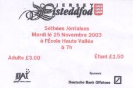

J'tais tchutieux du tout c'menchement. Ch'est pour tchi ou té fixée d'apliomb sus l'ais dans la tchuîsinne, l'invitation pour adjugi à ieun des preumièrs êvénements dé Jèrri. San instalâtion comme l'hôlouoge tout près à cliouait men yi toutes les fais qué l'entrais dans la tchuîsinne. Mais pouortant la justesse de l'hôlouoge, si j'allais accepter, les décisions séthaient faîtes par un homme.
Jé séthai bête de supposer qui s'en'allait être facille, n'importe combein large mes êpaules. Essentielment I'faut être professionnel à faithe sa tâche. Nous à besoin d'être un bouon êcouteux et bein seux ch'est un'âigue de s'accommoder, dêtèrminner et n'craindre pon un calenge.
 L'experiènce dé judgi dans d'autres sphères m'avait donné l'impulsion de saver ché que'j'voulais et la manièr de l'aver.
Ch'est pourtchi armé avec l'enthousiame d'un janne adolescent et la trépidation de l'âge j'accepti l'invitation avec la condition 'que y'à des judges de bêtes mais étout des bêtes de judges'. Mais de man mûs jé f'thais.
L'Adjoint pour le programme des deux séthées était Madanme Joan Tapley, à tchi que je sis bein èrconnaîssant pour son conseil de parité et s'n esprit de justesse. Je piochimes long et dû, mais tréjous avec grand fanne.
La v'nue pour l'êvénement 'tait à la Salle Public de Saint Martin qu'est idéal, tant pour l'atmosphéthe de campagne que râclyi un caud et aimbl'ye esprit pour les compêtiteurs. L'opportunité à participer dans la section des Sethées Jèrriais dé l'Eisteddfod à eune audience dé capacité est enchorélante pas seulement pouor les compétiteurs mais pour l'adjudicateur étout.
Un élement dé combat parmi les compétitors 'tait aussi fort qué jamais et l'esprit dé camarderie 'tait tréjous présent, avec l'êvénement li-même le sommet d'accomplyissement. Même le poête d'Avon en ethait'té ordgilleux!
Deux séthées d'vent et trilyie d'plyie s'en allaîent pas mucri les énthousiasts dé la niet. Annoncé, chaque compétiteux avanchait et la strade lus appartenait pour combein longue ou courté la piêche qu'ils avaient dêcidé dessus. Tchiques-uns avec des actions d'autres sans, mais tous avec la veue leunminneuse renversée par-dessus ieux comme des criatuthes immobilies dans un portrait. Un million dé diffethantes choses à êcouter, la tchestchion d'age né'vins pas dedans, jeunes et vièrs accomplyitent et j'nôs jouimes dé ché qué j'avaimes oui. Ch'est simpliément ravissant comment qué le r'tour des jeunes étudiants nos à èrdonné la fouai et nos a l'ver l'esprit dé penser qué j'allons ouï not' vier language pâlé à l'avnin,
Pour chès'là qui ne pouvaient pas y'v'nin pour autchunne raison, vous avez mantchi un vrai festin, mais èr'souv'n-ous qué lé s'tembre èr'veindra l'année chi vint, tréjous avec toute sa bieauté.
Winston Le Brun
2000
Viyiz étout: